📈 A股周K线图展示
基于最近三年数据的周K线图分析
生成时间: 2025-07-27 17:30:00
数据来源: /Users/kangfei/Downloads/result.csv
A股周K线图展示
共 100 只股票，1 页
第 1 页，共 1 页
000001.SZ
000002.SZ
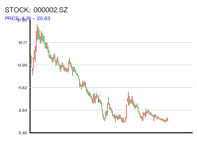
000004.SZ
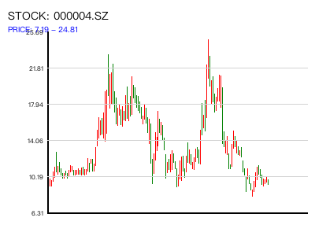
000006.SZ
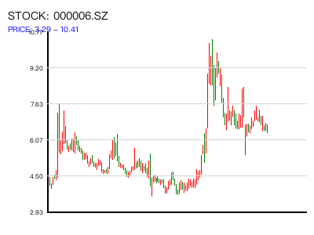
000007.SZ
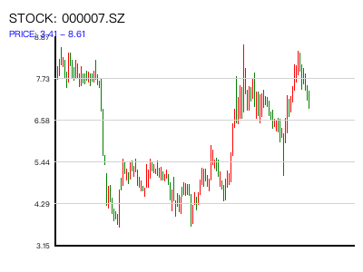
000008.SZ
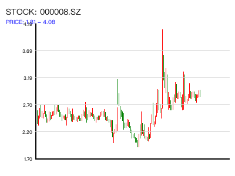
000009.SZ
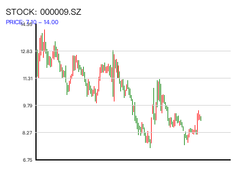
000010.SZ
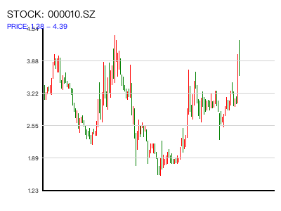
000011.SZ
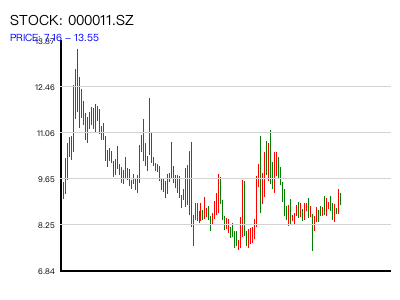
000012.SZ
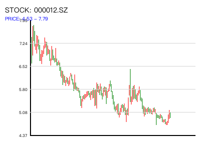
000014.SZ
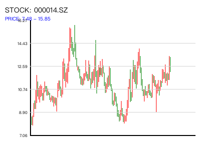
000016.SZ
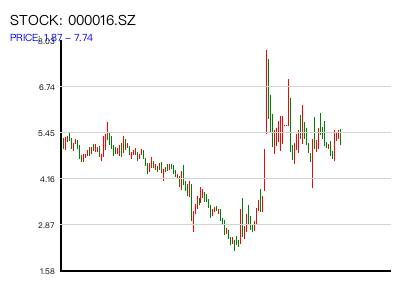
000017.SZ
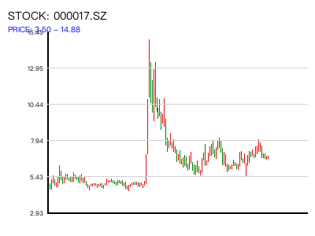
000019.SZ
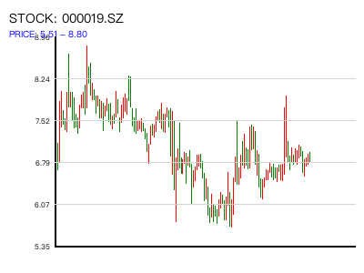
000020.SZ
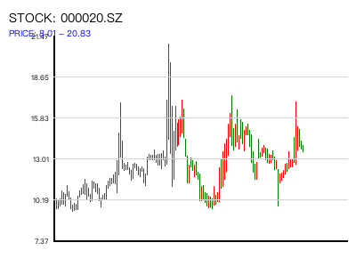
000021.SZ
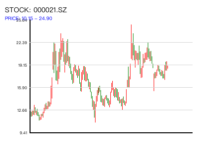
000025.SZ
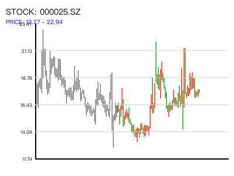
000026.SZ
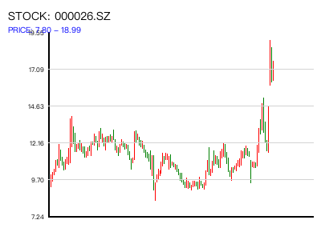
000027.SZ
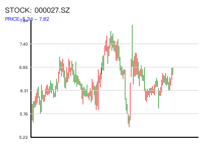
000028.SZ
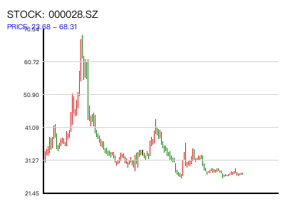
000029.SZ
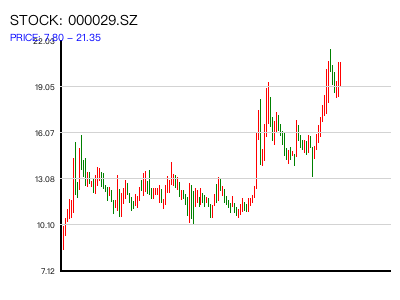
000030.SZ
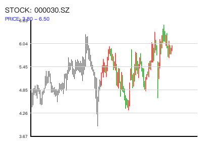
000031.SZ
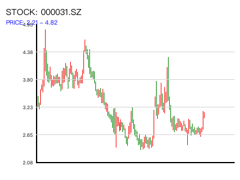
000032.SZ
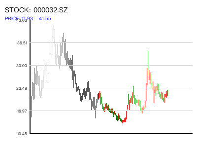
000034.SZ
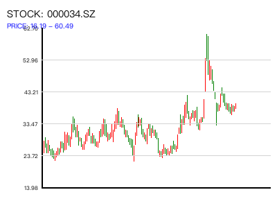
000035.SZ
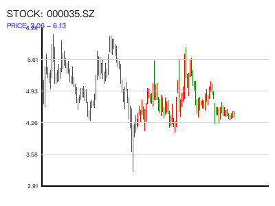
000036.SZ
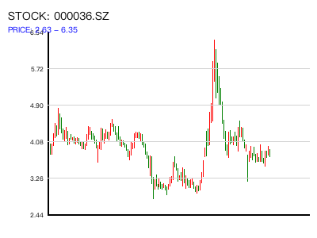
000037.SZ
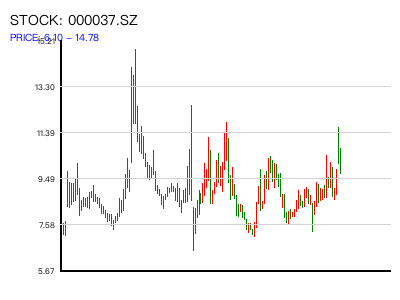
000039.SZ
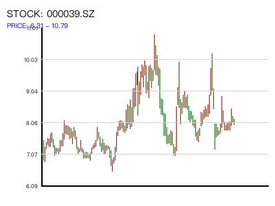
000042.SZ
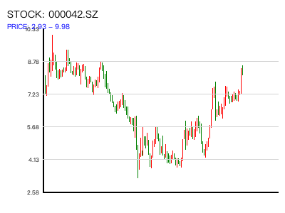
000045.SZ
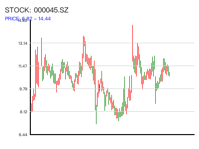
000048.SZ
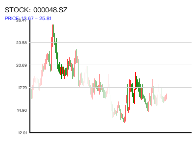
000049.SZ
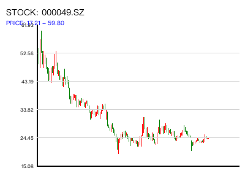
000050.SZ
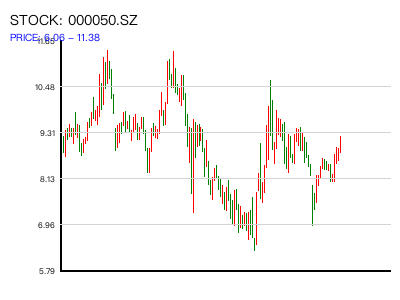
000055.SZ
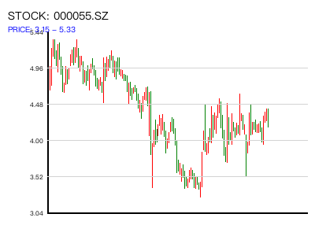
000056.SZ
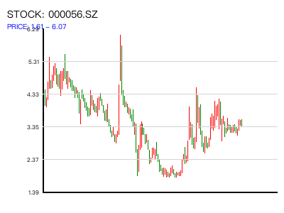
000058.SZ
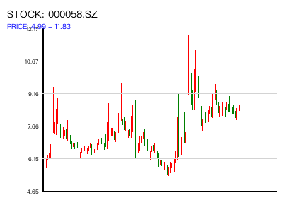
000059.SZ
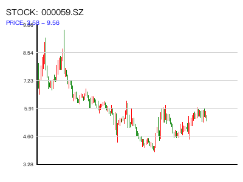
000060.SZ
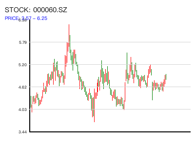
000061.SZ
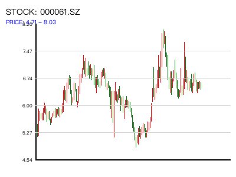
000062.SZ
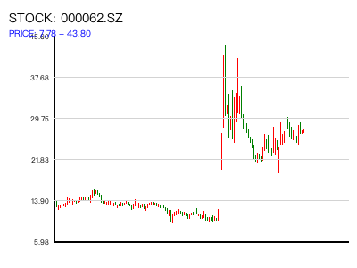
000063.SZ
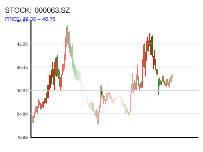
000065.SZ
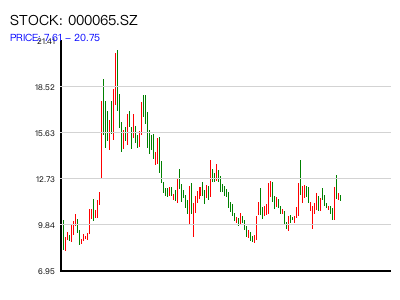
000066.SZ
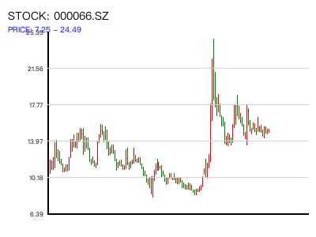
000068.SZ
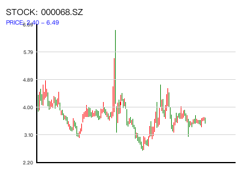
000069.SZ
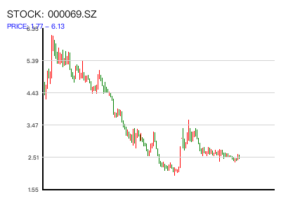
000070.SZ
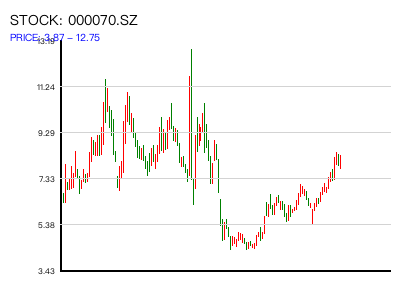
000078.SZ
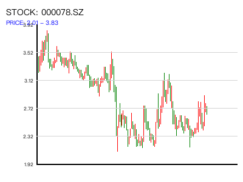
000088.SZ
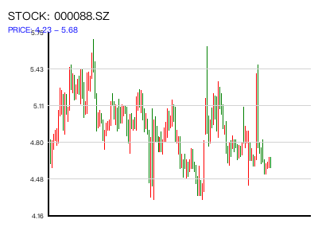
000089.SZ
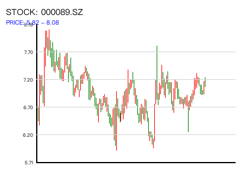
000090.SZ
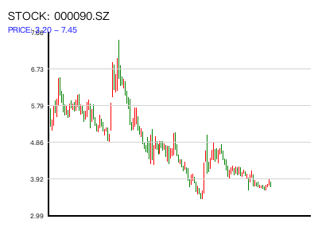
000096.SZ
000099.SZ
000100.SZ
000151.SZ
000153.SZ
000155.SZ
000156.SZ
000157.SZ
000158.SZ
000159.SZ
000166.SZ
000301.SZ
000333.SZ
000338.SZ
000400.SZ
000401.SZ
000402.SZ
000403.SZ
000404.SZ
000407.SZ
000408.SZ
000409.SZ
000410.SZ
000411.SZ
000415.SZ
000417.SZ
000419.SZ
000420.SZ
000421.SZ
000422.SZ
000423.SZ
000425.SZ
000426.SZ
000428.SZ
000429.SZ
000430.SZ
000488.SZ
000498.SZ
000501.SZ
000503.SZ
000504.SZ
000505.SZ
000506.SZ
000507.SZ
000509.SZ
000510.SZ
000513.SZ
000514.SZ
000516.SZ